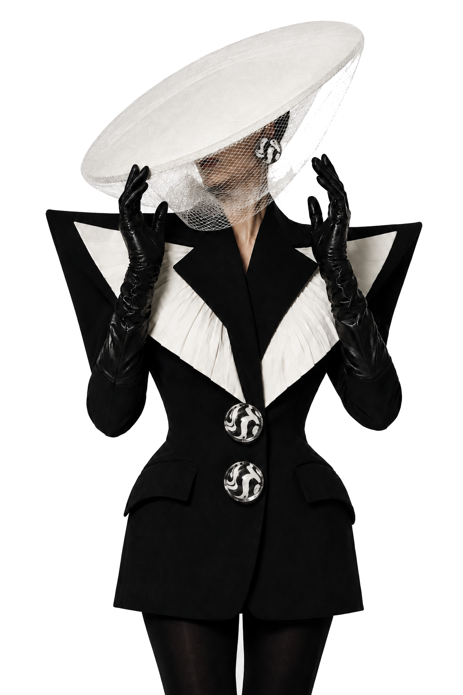
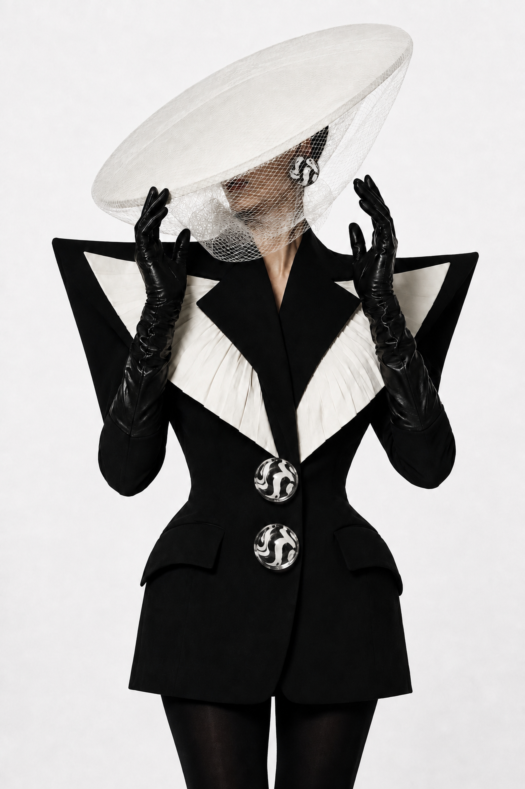

The Iconic Archive
Mode ist keine Dekoration.
Sie ist Autorität.
Editorial N°1
Silhouetten, die man nicht übersieht.
Schwarze Schneiderei trifft weißes Drama. Ein dunkles Statement mit präzisen Kontrasten.
Konzept ansehen
Konzept-Varianten
01Rot — Klassisches Banner02Zebra — Dark Statement03Editorial — Split Hero